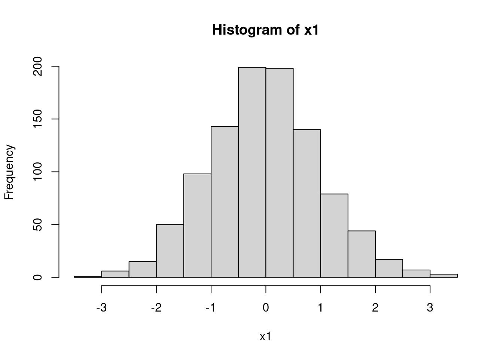

4 Statistics
4.1 Random Variables
On your computer, random variables are vectors created by functions. The vectors appear to be generated from a known probability function.
## Random bernoulli (Coin Flip)
rbinom(1, 1, 0.5)## [1] 1rbinom(4, 1, 0.5)## [1] 1 1 1 1sapply(1:4, function(i) rbinom(1, 1, 0.5))## [1] 1 0 0 1## random standard-normal
rnorm(4) ## [1] -1.0830139 1.0012645 1.0169815 -0.1832709sapply(1:4, function(i) rnorm(1))## [1] 1.215985 -1.473246 0.624566 -2.076260x1 <- rnorm(1000)
head(x1)## [1] 1.3668270 -0.6198533 -1.2607716 1.0967399 -0.4084538 -1.2633595length(x1)## [1] 1000hist(x1)
## random uniform
x2 <- runif(1000)
head(x2)## [1] 0.96128561 0.15253890 0.84452274 0.03792471 0.71428694 0.50909129length(x2)## [1] 1000hist(x2)
4.2 Functions of Random Variables
compute the mean of a random sample
runif(10)## [1] 0.1519318 0.6864031 0.9004112 0.7839101 0.9120637 0.7668445 0.6320371
## [8] 0.8529528 0.5184957 0.6574143x <- runif(1e3)
hist(x)
m <- mean(x)
abline(v=m, col=2)
see how the mean varies from sample to sample
par(mfrow=c(1,3))
sapply(1:3, function(i){
x <- runif(1e3)
hist(x, main=paste0('sample ', i), breaks=seq(0,1,by=.1))
abline(v= mean(x), col=2)
})
## [[1]]
## NULL
##
## [[2]]
## NULL
##
## [[3]]
## NULLexamine the sampling distribution of the mean
fun_of_rv <- function(f, n=20){
x <- runif(n)
y <- f(x)
return(y)
}
three_means <- c( mean(runif(100)), mean(runif(100)), mean(runif(100)) )
three_means## [1] 0.5134213 0.4991354 0.4560083three_means <- sapply(1:3, fun_of_rv, f=mean)
three_means## [1] 0.2928601 0.5099507 0.3708388sample_means <- sapply(1:1000, fun_of_rv, f=mean)
hist(sample_means, breaks=50, col=2, main='Sampling Distribution of the mean')
examine the sampling distribution of the standard deviation
three_sds <- c( sd(runif(100)), sd(runif(100)), sd(runif(100)) )
three_sds## [1] 0.2954934 0.2777635 0.2885504sample_sds <- sapply(1:1000, fun_of_rv, f=sd)
hist(sample_sds, breaks=50, col=4, main='Sampling Distribution of the sd')